MAME History runs the classics in your browser, compiled straight from MAME's own source. No plugins, no native build, nothing to install. Bring a ROM once, insert a coin.
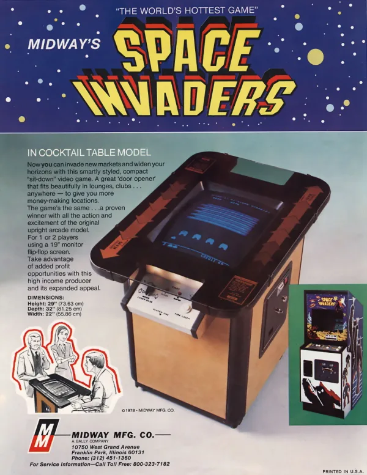
Space InvadersTaito / Midway · 1978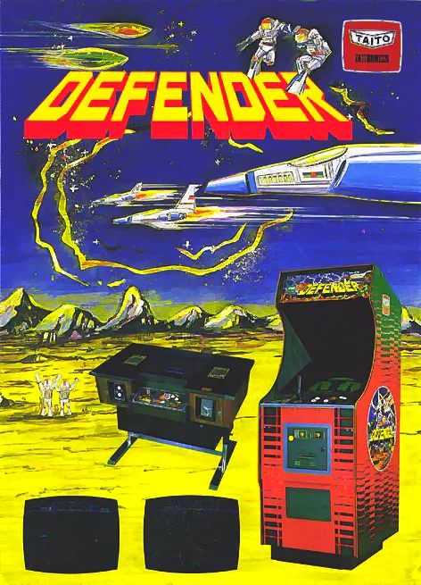
DefenderWilliams · 1980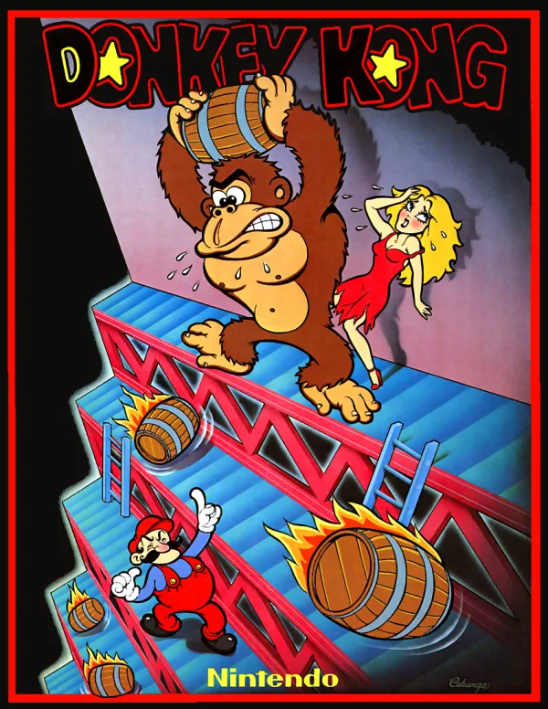
Donkey KongNintendo of America · 1981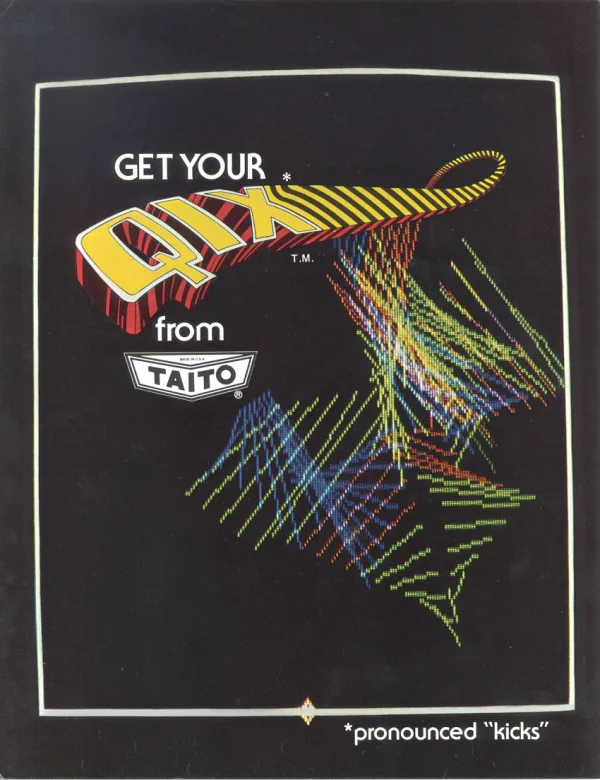
QixTaito America · 1981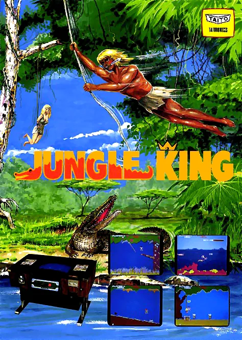
Jungle KingTaito · 1982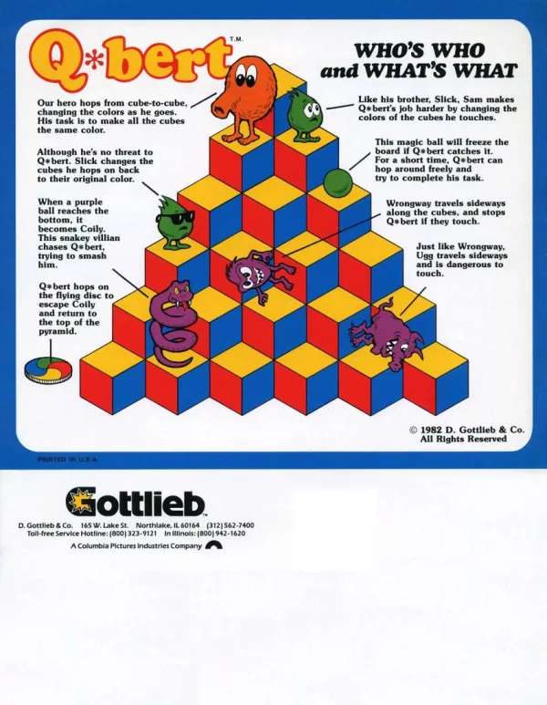
Q*bertGottlieb · 1982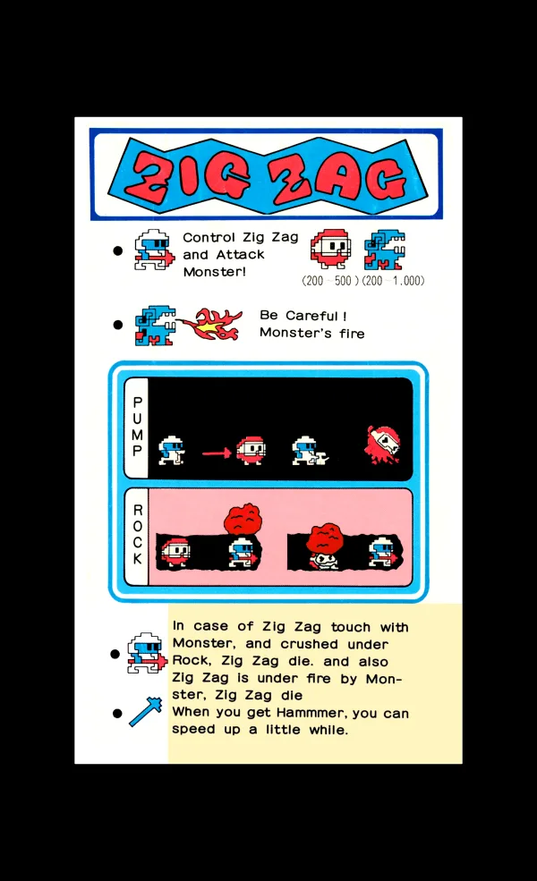
Zig Zagbootleg (LAX) · 1982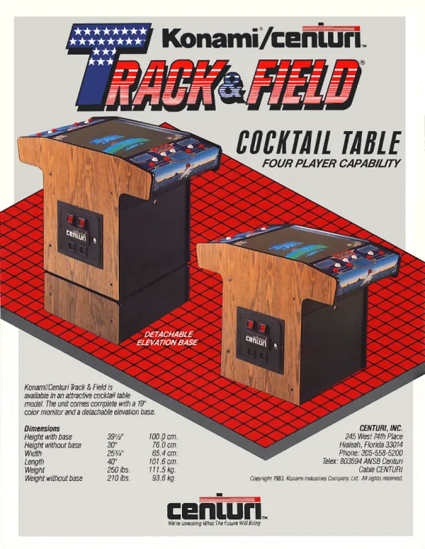
Track & FieldKonami · 1983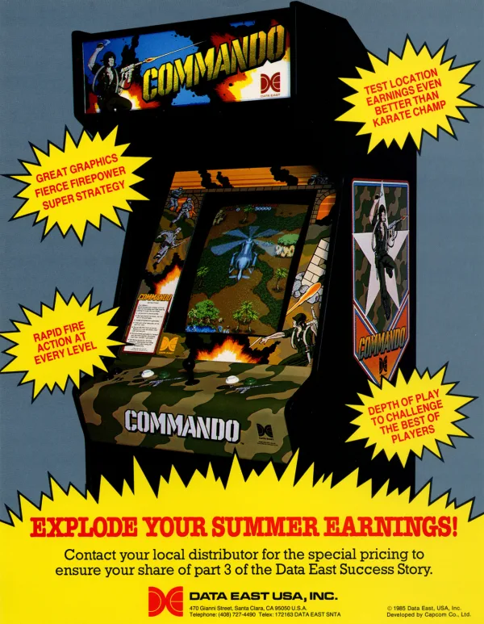
CommandoCapcom · 1985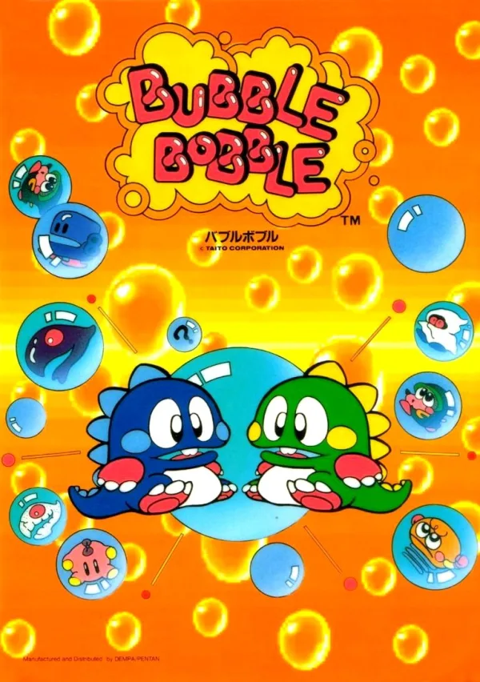
Bubble BobbleTaito · 1986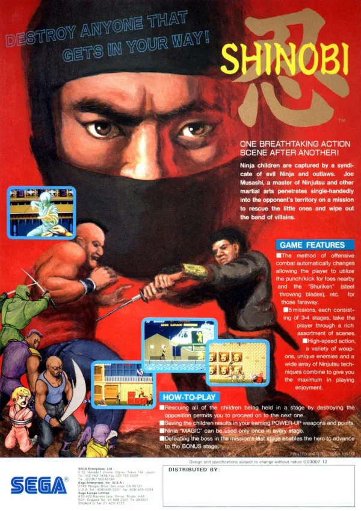
ShinobiSega · 1987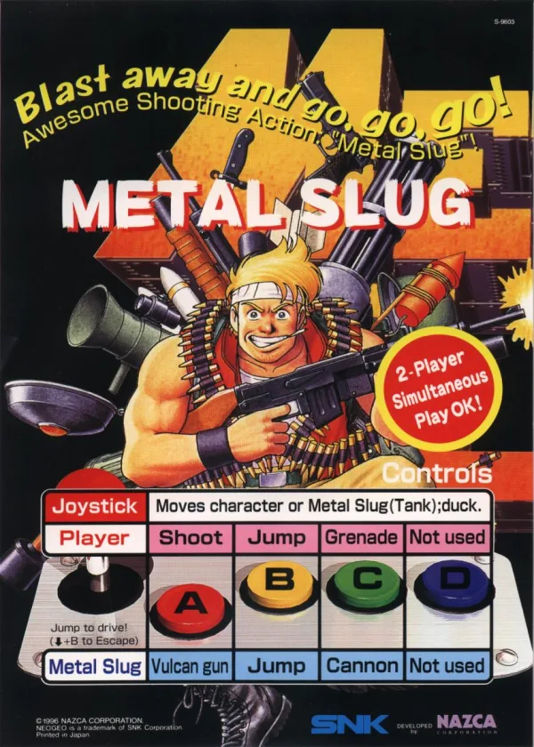
Metal Slug - Super Vehicle-001Nazca · 1996The same compiler, three kinds of machine. Each room is a shelf you walk up to: arcade boards take a ROM set, consoles and computers take the software their real hardware took.
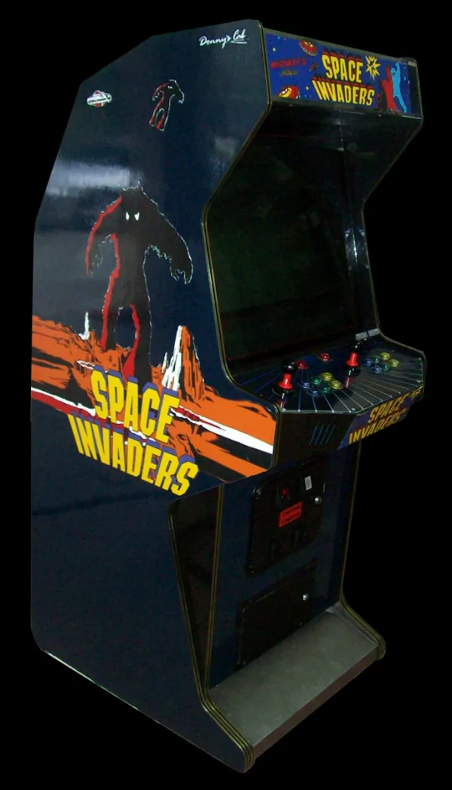
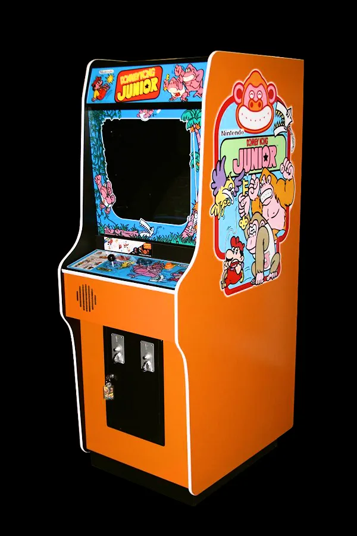
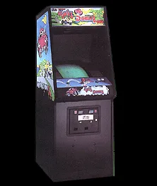
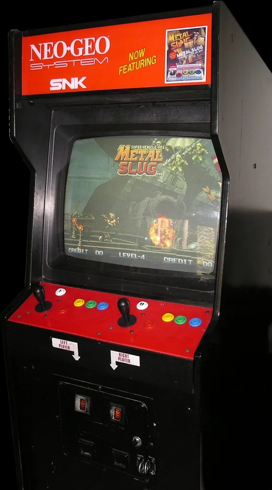
The coin-op boards, with their flyers, bezels and marquees. Drop a ROM set once and the cabinet stays lit.
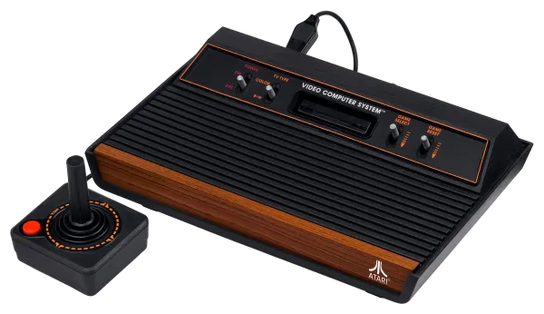
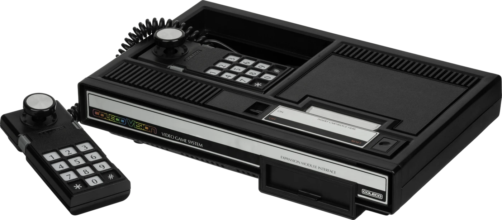
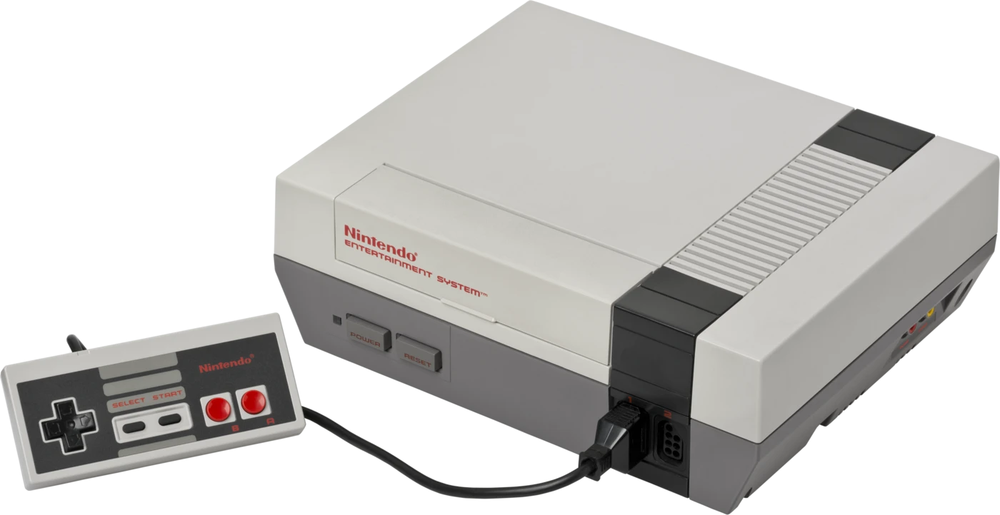
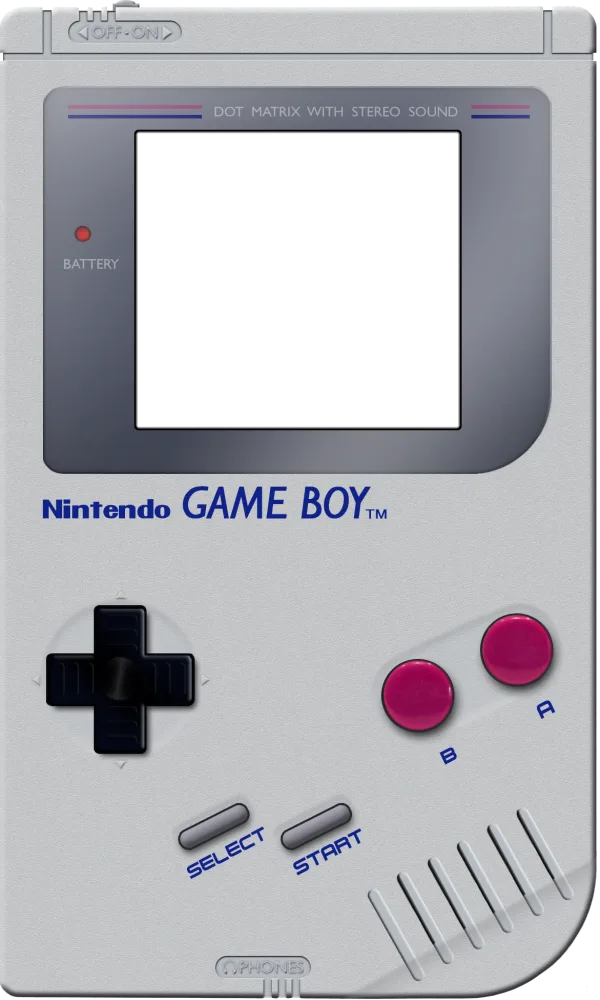
Living-room hardware with a cartridge shelf per machine. Pick a cart and boot it, no dump wrangling.
Home computers with a software shelf per list: tapes, disks and carts, and a keyboard you type on directly.
Every machine takes the keyboard out of the box. Plug in a USB pad or fight stick and it takes that too, with the controls legend on the game naming whichever you are holding.
The same keys on every cabinet; the game's own legend shows any title that differs.
■ every cabinet ■ six-button fighters: punches on the home row, kicks below
Control is never bound: macOS takes Ctrl+Arrow for itself.
Any pad the browser recognises as a Standard Gamepad works: the top row is the punches (light, medium, heavy), the bottom row the kicks, the first small button starts and the second inserts a coin. A second pad is player two. The spinner and trackball reach the browser as a mouse, and every dial and trackball machine takes them at MAME's own sensitivity, smoothed across the frame the way MAME does it.
Press any button after the game opens: browsers keep a pad hidden until it is touched. Games with fewer buttons fold the bottom row onto the top. On a spinner or trackball game, click the screen to capture the pointer so the cursor stays put; Esc lets go.
Drop your ROM set once and it stays in your own browser, so the next visit skips the drop screen and boots straight into the game. The machine keeps what it wrote down while you played, too: 64 machines keep their high-score tables, and 13 machines keep the battery-backed RAM their settings and bookkeeping live in.
Which bytes those are comes from MAME itself — the operator memory each board declares, and the score tables MAME's own hiscore data names — so a machine remembers the same things the real one did. Your dump, your scores and your settings stay in your browser and never reach a server; Forget ROM and Clear memory on the game page throw either away.
Every machine can be captured mid-game and put back exactly as it was: every register, every byte of RAM, every timer. Shift+F7 saves and F7 loads the newest; the deck under the screen keeps a shelf of them with a picture of each moment.
Saves live in your own browser and never leave it. A save loads only into the machine that made it: the same game, the same ROM set, the same build.
Press 2 player beside the title and you get a link to send somebody. They open it, bring their own copy of the same ROM set, and take player two: two browsers, a machine each, running the same game frame for frame.
You both use the controls you already know: your own arrows and fire buttons drive your own player, so nobody has to learn a second set. Coin and start are the cabinet's, as they are on the real thing.
Your machines talk to each other directly, not through us — there is no server in the middle and nothing to sign up for. All that crosses is which control moved and when; no ROM and no game data ever leaves either browser. Both machines restart together when the game begins, so high scores are set aside for the duration.
MAMEKIT treats MAME's source as an archival technical record. It reads a driver, keeps every fact tied to the line it came from, and generates a self-contained web app. No hand-written chip ports, no Emscripten build of MAME.
What this is not: it is not MAME, it is not bug-for-bug compatible with MAME, and it is not a substitute for it. Generated machines are a derivative work of the MAME source they were compiled from, and each one carries that driver's own licence and copyright holders. Credit shown for a driver comes from MAME's own headers and MAMEDEV's published release notes, never from commit history. For anything beyond the machines here, use MAME.